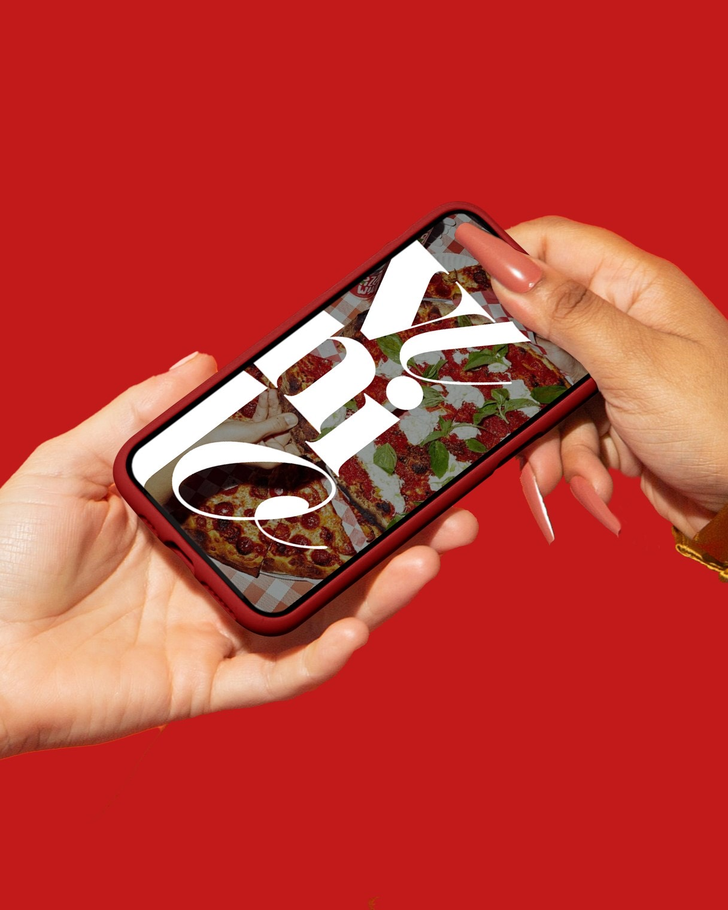

VINILO
Identidad Visual

Una identidad que celebra lo analógico en plena era digital: el ritual del disco traducido a un sistema cálido y táctil.
01
Estructura y ritual
La marca rescata el ritual del disco y lo traduce en un sistema visual donde la estructura tipográfica convive con la imperfección del proceso manual.
Una retícula sobria ordena la información, pero deja espacio para el gesto: trazos, texturas y un uso medido del color que evocan el carácter artesanal del vinilo. La estructura sostiene; lo manual emociona.

La estructura sostiene; lo manual emociona.